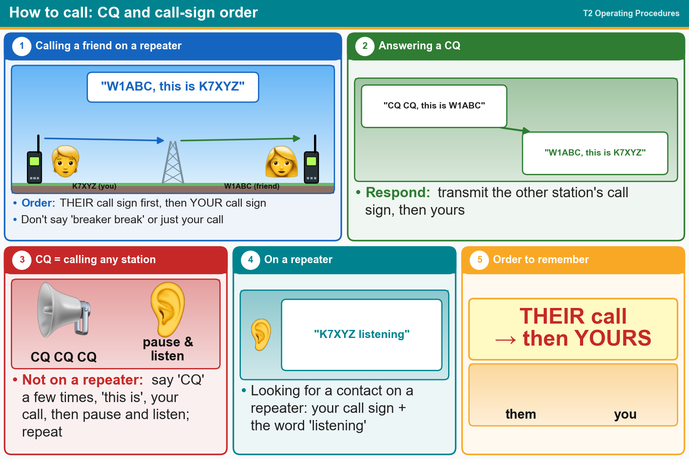

💡 Their call sign first, then yours. CQ = calling any station.
Press Check on any question to see if you're right (it won't show the answer), or Grade at the bottom to grade the whole page.
T2A04
What is an appropriate way to call another station on a repeater if you know the other station's call sign?
✔A.Say the station's call sign, then identify with your call sign
✘B.Say "CQ" three times, then the other station's call sign, followed by your call sign
✘C.Say "break, break," then the other station’s call sign, followed by your call sign
✘D.Wait for the station to call CQ, then answer with your call sign
T2A05
How should you respond to a station calling CQ?
✔A.Transmit the other station’s call sign followed by your call sign
✘B.Transmit a signal report followed by your call sign
✘C.Transmit your call sign followed by the other station’s call sign
✘D.Transmit "CQ" followed by the other station’s call sign
T2A06
What is an effective way to seek a call from any phone station when not using a repeater?
✘A.Say “QTC,” followed by “this is” and your call sign; if there is no answer, change the frequency and repeat
✔B.Repeat “CQ” a few times, followed by “this is,” and your call sign, then pause to listen; repeat as necessary
✘C.Sign your call sign once, followed by the words “listening for a call;” if there is no answer, change the frequency and repeat
✘D.Transmit an unmodulated carrier for approximately 10 seconds, followed by “this is” and your call sign, and pause to listen; repeat as necessary
T2A08
What is the meaning of the procedural signal “CQ”?
✔A.Calling any station
✘B.A shortened form of the term “Contest QSO”
✘C.Only the called station should transmit
✘D.“Communication Quality,” used to indicate transmitted audio clarity
T2A09
Which of the following is a customary way to indicate a station is listening on a repeater and looking for a contact?
✘A.“QSY” followed by your call sign
✘B.The repeater’s call sign followed by the station’s call sign
✔C.The station’s call sign followed by the word “listening”
✘D.“CQ CQ” followed by the repeater’s call sign